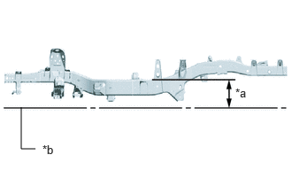
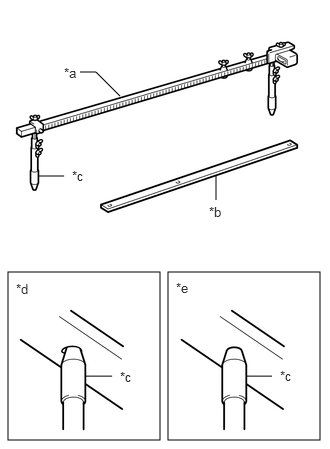

| Last Modified: 11-07-2025 | 6.11:8.1.0 | Doc ID: RM100000002HK5K |
| Model Year Start: 2024 | Model: Tacoma | Prod Date Range: [12/2023 - ] |
| Title: BODY DIMENSIONS: MEASURING INFORMATION: DIAGRAM DESCRIPTION; 2024 - 2026 MY Tacoma Tacoma HV [12/2023 - ] | ||
DIAGRAM DESCRIPTION
HINT:
- There are two types of dimensions in the diagram.
- In cases in which only one dimension is given, left and right are symmetrical.
- For symbols, capital letters indicate right side of vehicle, small letters indicate left side of vehicle (seen from rear).
Point-to-Point Distance

|
*a |
Distance between the centers of the measuring points |
(a) Straight-line distance between the centers of two measuring points.
Distance From Center Line / Datum Plane

|
*a |
Center-to-center horizontal distance in forward/rearward |
|
*b |
Vertical distance to center |
|
*c |
Vertical distance to lower surface |
|
*d |
Imaginary Datum Line |
(a) Horizontal distance in forward/rearward between the centers of two measuring points.
(b) Distance from the Imaginary Datum Line.
Imaginary Datum Line
|
*a |
300 mm (11.81 in.) |
|
*b |
Imaginary Datum Line |
(a) The imaginary datum line when measuring the height is below 300 mm (11.81 in.) from the upper face on the center of the flame.
Measurement
|
*a |
Tracking Gauge |
|
*b |
Master Gauge |
|
*c |
Pointer |
|
*d |
Wrong |
|
*e |
Correct |
(a) Basically, all measurements are to be done with a tracking gauge. For portions where it is not possible to use a tracking gauge, a tape measure should be used.
(b) Use only a tracking gauge that has no looseness in the body, measuring plate, or pointers.
HINT:
- The height of the left and right pointers must be equal.
- Always calibrate the tracking gauge before measuring or after adjusting the pointer height.
- Take care not to drop the tracking gauge or otherwise shock it.
- Confirm that the pointers are securely in the holes.
(c) When using a tape measure, avoid twists and bends in the tape.